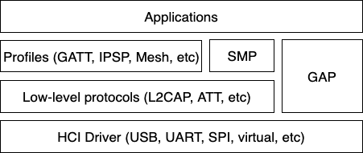

LE 主机
Bluetooth 主机实现了所有高层协议和规范（profile），最重要的是为应用程序提供高层 API。下图描绘了主机的主要协议和规范分层。

主机协议栈的最底层是所谓的 HCI 驱动，负责屏蔽 HCI 传输的细节。它提供了一个基本 API，用于在控制器和主机之间双向传递数据。
HCI 处理之上最重要的模块可能是通用访问规范（GAP）。GAP 通过定义四种不同的 Bluetooth 使用角色，简化了对 Bluetooth LE 的访问：
面向连接的角色
外设（例如智能传感器，通常用户界面有限）
中心设备（通常是手机或 PC）
无连接角色
广播者（发送 Bluetooth LE 广播，例如智能信标）
观察者（扫描 Bluetooth LE 广播）
每个角色都有各自的构建时配置选项：CONFIG_BT_PERIPHERAL、CONFIG_BT_CENTRAL、CONFIG_BT_BROADCASTER 和 CONFIG_BT_OBSERVER。在面向连接的角色中，中心设备会隐式启用观察者角色，外设会隐式启用广播者角色。创建应用程序时，通常第一步是确定需要哪些角色，然后在此基础上展开。Bluetooth Mesh 是一个稍微特殊的情况，它至少需要观察者和广播者角色，还可能需要外设角色。后面的章节将对此进行更详细的说明。
外设角色
大多数基于 Zephyr 的 Bluetooth LE 设备很可能都是外设角色设备。这意味着它们执行可连接广播，并公开一个或多个 GATT 服务。使用 bt_gatt_service_register() API 注册服务后，应用程序通常会使用 bt_le_adv_start() API 开始可连接广播。
源码树中提供了多个外设示例应用程序，例如 samples/bluetooth/peripheral_hr。
中心设备角色
对于基于 Zephyr 的设备，中心设备角色可能不如外设角色常见，但仍然是一种合理的选择，并且在 Zephyr 中同样得到良好支持。中心设备角色的设备不接受来自其他设备的连接，而是扫描可用的外设并选择其中一个进行连接。连接后，中心设备通常充当 GATT 客户端，先发现可用的服务，再访问一个或多个受支持的服务。
为了最初发现要连接的设备，应用程序通常会使用 bt_le_scan_start() API，等待找到合适的设备（通过扫描回调），使用 bt_le_scan_stop() 停止扫描，然后使用 bt_conn_le_create() 连接到该设备。
源码树中提供了一些中心设备角色的示例应用程序，例如 samples/bluetooth/central_hr。
观察者角色
观察者角色设备使用 bt_le_scan_start() API 扫描设备，但不会连接其中任何一个，而是仅利用所发现设备的广播数据，并可选地结合接收信号强度（RSSI）。
广播者角色
广播者角色设备使用 bt_le_adv_start() API 广播特定的广播数据，但广播类型为不可连接，即其他设备无法连接到它。
连接
连接处理及相关 API 请参阅 连接管理 一节。
回调执行上下文
主机通过已注册的回调向应用程序传递事件，例如 bt_conn_cb、bt_le_scan_cb 或 bt_l2cap_chan_ops 中的回调。除非文档另有说明，这些回调都在线程上下文中调用，绝不会在 ISR 中调用。大多数回调运行在协议栈内部的上下文中，但目前有些回调是在触发它们的 API 调用内部同步调用的，因此运行在调用者线程中：例如 bt_unpair() 会在返回前调用 bond_deleted，bt_gatt_unsubscribe() 可能会在返回前以 NULL 数据调用 notify。这两种行为都不属于 API 的一部分：如今同步传递的回调，在将来的版本中可能会推迟到协议栈内部上下文中执行，反之亦然；而且具体的线程在以往版本之间已经变化过，今后也可能再次变化。应用程序只应依赖上述保证，而不应依赖于从某个特定位置调用，或在某个特定调用返回之前被调用。
当回调运行在协议栈内部的上下文中时，该上下文与协议栈自身的处理共享：回调中花费的时间会推迟其他 Bluetooth 活动，而阻塞还带来额外的风险：如果等待的条件只能由 Bluetooth 处理本身来满足，就会造成死锁，因为在回调返回之前这些处理无法继续进行。典型的例子是使用 K_FOREVER 从一个由运行该回调的同一上下文负责补充的缓冲池中分配缓冲区。由于应用程序无法依赖某个回调使用哪个上下文，下述做法适用于所有回调。
在回调中调用 Bluetooth API 很常见，也是受支持的，尽管其中大多数 API 都可能阻塞；此时需要对阻塞风险加以管理，而不是回避：
保持回调简短，把耗时较长或可能无限期阻塞的工作推迟到应用程序自己的线程或工作队列中执行。
分配时优先使用
K_NO_WAIT或有限超时，而不是K_FOREVER，并处理分配失败的情况。合理设置缓冲池的大小（例如
CONFIG_BT_L2CAP_TX_BUF_COUNT或CONFIG_BT_ATT_TX_COUNT），使回调中进行的分配无需等待。
安全
为了在两个 Bluetooth 设备之间建立安全关系，需要使用一个称为配对（pairing）的过程。该过程既可以通过 GATT 服务的安全属性隐式触发，也可以在连接对象上使用 bt_conn_set_security() API 显式触发。
为了达到更高的安全级别并防范中间人（MITM）攻击，建议在配对期间使用某种带外信道。如果设备具有足够的用户界面，这个“信道”就是用户本人。设备的能力通过 bt_conn_auth_cb_register() API 注册。传给该 API 的 bt_conn_auth_cb 结构体包含一组可在配对期间使用的可选回调；如果设备缺少某项功能，相应的回调可以设为 NULL。例如，如果设备没有输入方式但有显示屏，则 passkey_entry 和 passkey_confirm 回调应设为 NULL，而 passkey_display 应设为能够向用户显示配对码（passkey）的回调。
根据本地和远端的安全要求与能力，可以达到以下四种安全级别：
BT_SECURITY_L1无加密，无认证。
BT_SECURITY_L2加密但无认证（无 MITM 防护）。
BT_SECURITY_L3使用 Bluetooth 4.0 和 4.1 中的传统配对（legacy pairing）方法进行加密和认证。
BT_SECURITY_L4使用自 Bluetooth 4.2 起提供的 LE 安全连接（LE Secure Connections）功能进行加密和认证。
备注
Mesh 通过一个称为配网（provisioning）的过程实现自己的安全方案。它的流程与配对类似，但使用单独的 Mesh 专用 API 完成。
L2CAP
L2CAP 是逻辑链路控制和适配协议（Logical Link Control and Adaptation Protocol）的缩写。它是 Bluetooth 连接上所有通信的公共层，但应用程序只有在以所谓的面向连接信道（CoC）模式使用它时才会直接接触它。更多信息请参阅 L2CAP API 一节。
术语
以下定义来自核心规范（Core Specification）5.4 版第 3 卷 A 部分 1.4 节。
术语 |
描述 |
|---|---|
上层（Upper layer） |
L2CAP 之上的层，以 SDU 的形式交换数据。它可以是应用程序或更高层的协议。 |
下层（Lower layer） |
L2CAP 之下的层，以 PDU（或分片）的形式交换数据。通常是 HCI。 |
服务数据单元（SDU） |
L2CAP 与上层交换的数据包。 该术语仅适用于增强重传模式、流模式、重传模式和流控模式，不适用于基本 L2CAP 模式。 |
协议数据单元（PDU） |
包含 L2CAP 数据的数据包。PDU 总是以基本 L2CAP 头开始。 BR/EDR 的 PDU 类型：I 帧、S 帧、C 帧和 G 帧。 |
最大传输单元（MTU） |
上层能够接受的 SDU 的最大大小。 |
最大载荷大小（MPS） |
L2CAP 层能够接受的最大载荷大小。 在基本 L2CAP 模式下，MTU 大小等于 MPS。在不分段的基于信用（credit-based）的信道中，MTU 等于 MPS 减 2。 |
基本 L2CAP 头 |
位于每个 PDU 的开头，包含两个字段：PDU 长度和信道标识符（CID）。 |
PDU 类型
B 帧：基本信息帧（Basic information frame）
在基本 L2CAP 模式中使用的 PDU。它包含从上层接收的载荷，或作为载荷交付给上层的数据。

K 帧：基于信用的帧（Credit-based frame）
在 LE 基于信用的流控模式和增强型基于信用的流控模式中使用的 PDU。它包含一个 SDU 分段和额外的协议信息。


相关 Kconfig
Kconfig 符号 |
描述 |
|---|---|
表示 MPS |
|
表示 L2CAP MTU |
|
启用 LE 基于信用的流控，从而协议栈可以使用 K 帧 PDU |
GATT
通用属性规范（Generic Attribute Profile）是 LE 连接上最常用的通信方式。关于该层的更详细描述和 API 参考，请参阅 GATT API 参考一节。
ATT 超时
如果对端设备未在 ATT 超时时间内响应 ATT 请求（例如读或写），主机将自动发起断开连接。这样就把罕见的故障情况归结为普通的断开连接，从而简化了错误处理，开发者可以统一处理意外断开，而无需为 ATT 超时编写特殊处理。

Mesh
在所需的 GAP 角色方面，Mesh 有些特殊。默认情况下，Mesh 需要同时启用观察者和广播者角色。如果需要可选的 GATT 代理功能，则还应启用外设角色。
Mesh 的 API 参考请参阅 Mesh API 参考一节。
LE Audio
LE Audio 是一组规范和服务，利用 GATT 和等时信道通过 Bluetooth Low Energy 提供音频。其架构和 API 参考请参阅 Bluetooth 音频架构。
持久化存储
Bluetooth 主机协议栈使用设置（settings）子系统实现到 Flash 的持久化存储。这需要具备 Flash 驱动，并在 Flash 上指定一个“storage”分区。所需的典型配置选项如下所示：
CONFIG_BT_SETTINGS=y CONFIG_FLASH=y CONFIG_FLASH_PAGE_LAYOUT=y CONFIG_FLASH_MAP=y CONFIG_NVS=y CONFIG_SETTINGS=y
启用后，应用程序需负责在初始化 Bluetooth（使用 bt_enable() API）之后调用 settings_load()。